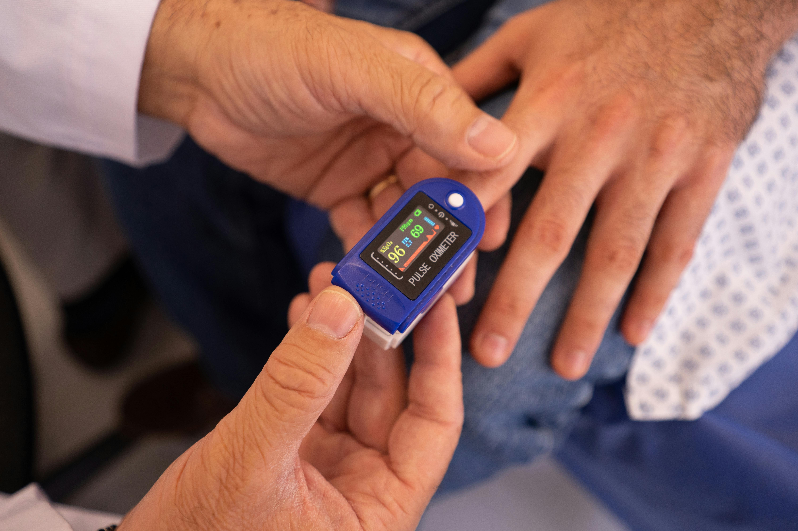

Salud digestiva y cirugía de confianza
El Instituto Médico Quirúrgico Marinelli ofrece atención especializada en gastroenterología y cirugía general, con infraestructura moderna y el respaldo de años de trayectoria en la provincia.
El instituto
El Instituto Médico Quirúrgico Marinelli nace de la trayectoria del Dr. Carlos Marinelli, cirujano general y especialista en gastroenterología con décadas de ejercicio profesional en La Rioja.
Su visión fue construir una institución médica con la infraestructura que los pacientes y los profesionales de la provincia merecen: 20 consultorios equipados, dos quirófanos habilitados para cirugías ambulatorias, y una estructura administrativa que permite a cada especialista concentrarse en lo que importa.


Enfoque centrado en el paciente
Cada plan de tratamiento se personaliza cuidadosamente para satisfacer las necesidades individuales del paciente y su historial médico.
Nuestra Misión
Brindar servicios de salud de calidad, centrados en la atención personalizada, la prevención y el acompañamiento continuo de cada paciente.
Nuestra Visión
Ser un centro médico de referencia por la excelencia profesional, la innovación en nuestros servicios y el compromiso humano con la comunidad.
Nuestros Valores
-
Compromiso: actuamos con responsabilidad y dedicación.
-
Empatía: escuchamos y comprendemos las necesidades de cada persona.
-
Ética: mantenemos la transparencia y el respeto en cada acción.
Especialidades médicas
Contamos con un equipo interdisciplinario de profesionales altamente capacitados en distintas áreas de la medicina. Brindamos atención integral, diagnósticos precisos y tratamientos personalizados para cada paciente.
Gastroenterología
Diagnóstico y tratamiento de enfermedades del esófago, estómago, intestino, hígado, páncreas y vesícula biliar.
Cirugía y Endoscopía Digestiva
Cirugía abierta, laparoscópica y procedimientos endoscópicos para el diagnóstico y tratamiento de patologías del aparato digestivo.
Proctología
Atención especializada de enfermedades del colon, recto y ano, incluyendo hemorroides, fisuras, fístulas y lesiones colorrectales.
Servicios
Atención personalizada en gastroenterología, cirugía y proctología, con años de experiencia clínica y tecnología actualizada. Cada consulta y procedimiento se realiza con el compromiso de ofrecer un diagnóstico preciso y un tratamiento adecuado a cada paciente.
Consulta en Gastroenterología
Diagnóstico, prevención y tratamiento de enfermedades gastroenterológicas. Contamos con profesionales especializados y estudios complementarios para el cuidado del aparato digestivo.
Leer más
Videogastroscopía
Evaluación y seguimiento de trastornos gastroenterológicos, desde gastritis y úlceras hasta enfermedades del tracto digestivo. Atención personalizada y diagnóstico preciso.
Leer más
Videocolonoscopía
Exploración endoscópica del colon y recto para detección temprana de pólipos, tumores y enfermedades inflamatorias del intestino grueso.
Leer más
Control y seguimiento postoperatorio
Seguimiento médico personalizado tras intervenciones quirúrgicas o procedimientos endoscópicos, garantizando una recuperación adecuada y la detección precoz de cualquier complicación.
Leer másPrevención y detección temprana de cáncer digestivo
Estudios endoscópicos orientados a la identificación precoz de lesiones precancerosas y tumores del tracto digestivo, con especial énfasis en cáncer colorrectal y gástrico.
Leer másCirugía Ambulatoria
Procedimientos quirúrgicos programados en quirófanos propios habilitados, sin necesidad de internación.
Leer másUbicación y contacto
Estamos ubicados en una zona de fácil acceso, con amplias comodidades para pacientes y acompañantes. Comunicate con nosotros para solicitar turnos, realizar consultas o recibir asesoramiento personalizado.
Nuestra dirección
Copiapó 650, Barrio Centro
La Rioja, Argentina
Teléfonos
+54 (380) 4123456
+54 (380) 47891011